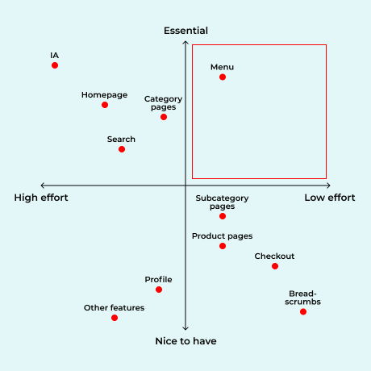

Nov 2021
Self-Project • eCommerce
Responsive Web Design
Prototype Testing
This was a design challenge which got inspired when I faced difficulty shopping online on Uniqlo's website.
When Uniqlo got more products, the website got more difficult to navigate due to improper categorising. The major and minor issues were listed down while exploring the website.
The menu needed to be fixed first as the better the categorisation, the easier people can navigate and discover Uniqlo's products.
Went through the menu across different devices and pin-pointed respective issues in details.
Studied the e-commerce sites of Uniqlo's competitors' based on its Industry Ranking in 2021.
Sketched wireframes focusing on a organised and inspiring menu layout for different devices.
After final design was prototyped, tested it with new and exisitng Uniqlo users to compare success rate of finding instructed Uniqlo products before and after redesigning the menu.
The success rate to locate menu items using new design was higher than using the current design.
Meiyee Loo © 2022